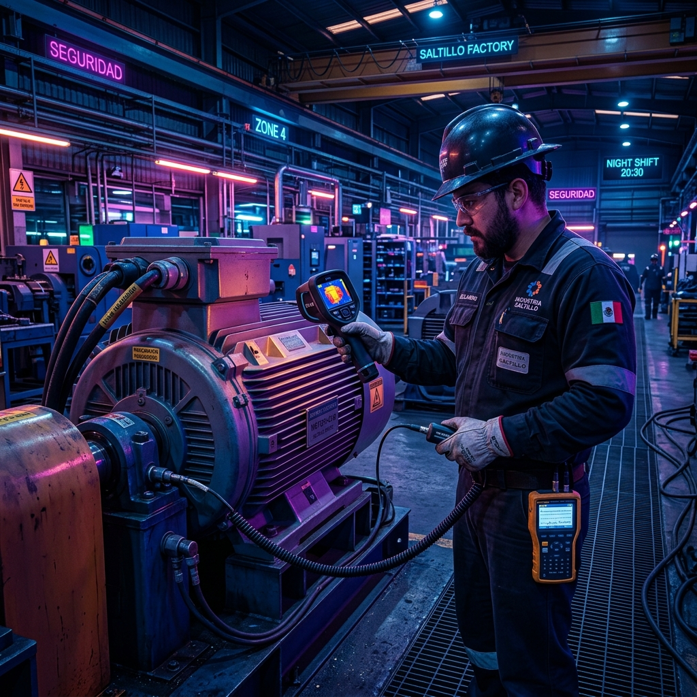

¿Cómo Afecta el Clima Extremo de Saltillo al Sobrecalentamiento de PLCs y Tableros Industriales?

El clima en Saltillo y Ramos Arizpe es conocido por sus drásticos cambios de temperatura. Durante la primavera y el verano, las temperaturas ambientales en Coahuila superan con frecuencia los 38°C a la sombra. Dentro de las naves industriales de estampado, inyección de plástico o fundición, esta temperatura se eleva fácilmente por encima de los 45°C a 50°C.
¿Qué le sucede a los equipos electrónicos cuando hace calor? Los PLCs, fuentes de poder, variadores VFD y servodrives encerrados en gabinetes herméticos sin la climatización adecuada sufren de estrés térmico extremo y paros por sobrecalentamiento.
💡 Ejemplo de la Vida Real en Planta:
Imagínate dejar tu teléfono celular sobre el tablero de tu auto bajo el sol caliente de Saltillo a mediodía. En pocos minutos, el teléfono muestra un aviso de "Temperatura alta: el equipo debe enfriarse antes de usarse" y se apaga automáticamente. Exactamente lo mismo le ocurre a la CPU de un PLC Allen-Bradley o Siemens dentro de un tablero saturado de calor.
Síntomas de Fallas por Clima y Calor en la Electrónica Industrial
- Microparos Intermitentes: La CPU del PLC se reinicia de manera aleatoria a mitad del turno vespertino cuando la temperatura de la nave alcanza su punto máximo.
- Disparo de Alarmas en Variadores VFD: Mensajes de error por sobretemperatura en el puente de diodos IGBT de los variadores de frecuencia.
- Degradación de Condensadores Electrolíticos: El calor continuo reduce drásticamente la vida útil de los capacitores de las fuentes de poder de 24VDC, provocando caídas de voltaje impredecibles.
- Acumulación de Polvo por Filtros Obstruidos: Con el calor, el personal suele abrir las puertas del tablero metálico para "ventilarlo", permitiendo la entrada de polvo fino e hilos de metal que causan cortocircuitos.
4 Soluciones de Climatización y Prevención de Paros en Coahuila 2026
- Instalación de Aires Acondicionados para Tableros (Rittal / Hoffman): Mantienen una temperatura interna constante de 30°C a 35°C e impiden el ingreso de contaminantes externos.
- Cálculo Térmico del Gabinete: Dimensionamiento correcto del flujo de aire (CFM) considerando el calor generado por los servodrives y la temperatura ambiente máxima de Saltillo.
- Termografía Infrarroja Preventiva: Inspecciones periódicas con cámaras térmicas para detectar puntos calientes en clemas, interruptores térmicos y conexiones de PLC antes de que ocurra una falla.
- Mantenimiento de Filtros y Ventiladores: Limpieza programada de los sistemas de ventilación forzada sin abrir las puertas del gabinete.
🚨 ¿Tienes un paro de línea o falla de PLC en Saltillo o Ramos Arizpe?
En Robologix Automation diagnosticamos fallas por temperatura, instalamos sistemas de climatización de tableros y brindamos atención presencial 24/7. Envíanos una foto o código de falla por WhatsApp al +52 844 455 1869 para asistirte de inmediato.
¿Necesitas asesoría para climatizar tableros en tu planta en Saltillo?
Contáctanos directamente con nuestros ingenieros especialistas en Coahuila.
Contactar por WhatsApp (+52 844 455 1869)